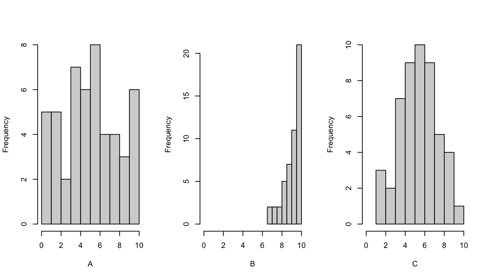
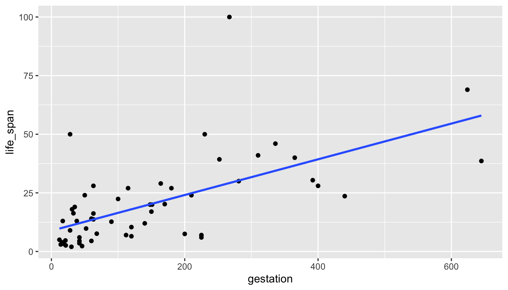
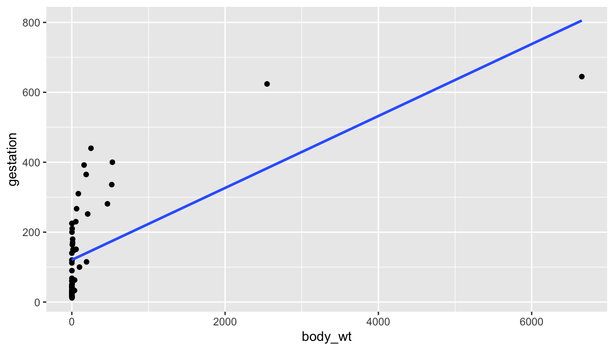
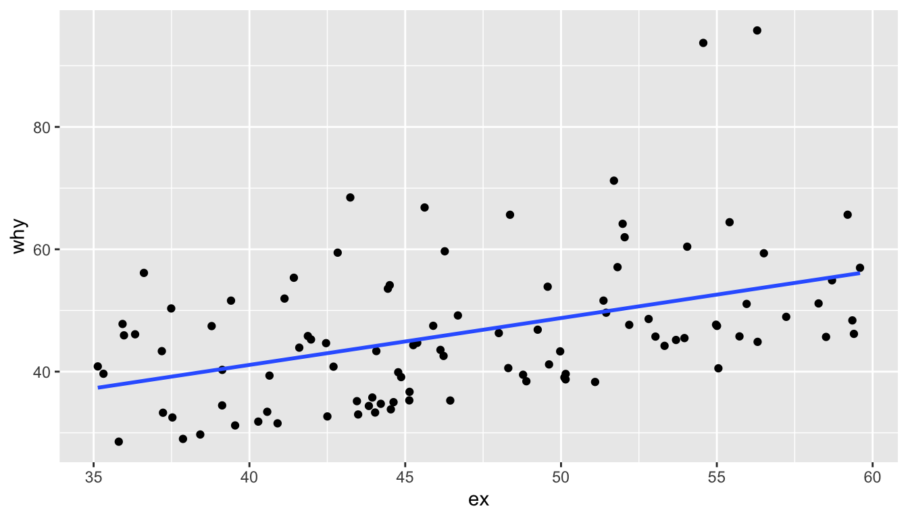

Clicker Q
to go with Introduction to Modern Statistics by Çentinkaya-Rundel & Hardin. Math 58B - Introduction to Biostatistics.
- If 16 infants with no genuine preference choose 16 toys, what is the most likely number of “helping” toys that will be chosen?1
- 4
- 7
- 8
- 9
- 10
- How likely is it that exactly 8 helpers will be chosen (if there is no preference)?2
- 0-15%
- 16-30%
- 31-49%
- 50%
- 51-100%
- What if we flipped a coin 160 times? What percent of the time will the simulation flip exactly 80 heads?3
- 0-15%
- 16-30%
- 31-49%
- 50%
- 51-100%
- Is our actual result of 14 (under the coin model)…4
- very surprising?
- somewhat surprising?
- not very surprising?
- Based on the first handwriting study, can we conclude that cursive causes higher scores (on average)?5
- Yes
- No
- It depends
- Based on the second handwriting study, can we conclude that cursive causes higher scores (on average)?6
- Yes
- No
- It depends
- A possible confounding variable for the handwriting study is:7
- grade of the student (age)
- region of country where the SAT was taken
- academic ability of the student
- gender identity of the student
- number of siblings of the student.
- The main reason we randomly assign the explanatory variable is:8
- To get the smallest p-value possible
- To balance the expected causal mechanism across the two groups
- To balance every possible variable except the causal mechanism across the two groups
- So that our sample is representative of the population
- So that the sampling process is unbiased
- The main reason we take random samples from the population is:9
- To get the smallest p-value possible
- To balance the expected causal mechanism across the two groups
- To balance every possible variable except the expected causal mechanism across the two groups
- So that our sample is representative of the population
- So that the sampling process is unbiased
- Are there effects of second-hand smoke on the health of children?10
- definitely obs study
- definitely experiment
- unhappily obs study
- unhappily experiment
- Do people tend to spend more money in stores located next to food outlets with pleasing smells?11
- definitely obs study
- definitely experiment
- unhappily obs study
- unhappily experiment
- Does cell phone use increase the rate of automobile accidents?12
- definitely obs study
- definitely experiment
- unhappily obs study
- unhappily experiment
- Do people consume different amounts of ice cream depending on the size of bowl used?13
- definitely obs study
- definitely experiment
- unhappily obs study
- unhappily experiment
- Which is more effective: diet A or diet B?14
- definitely obs study
- definitely experiment
- unhappily obs study
- unhappily experiment
- Suppose that we record the midterm exam score and the final exam score for every student in a class. What would the value of the correlation coefficient be if every student in the class scored ten points higher on the final than on the midterm:15
- r = -1
- -1 < r < 0
- r = 0
- 0 < r < 1
- r = 1
- Suppose that we record the midterm exam score and the final exam score for every student in a class. What would the value of the correlation coefficient be if every student in the class scored five points lower on the final than on the midterm:16
- r = -1
- -1 < r < 0
- r = 0
- 0 < r < 1
- r = 1
- Suppose that we record the midterm exam score and the final exam score for every student in a class. What would the value of the correlation coefficient be if every student in the class scored twice as many points on the final than on the midterm:17
- r = -1
- -1 < r < 0
- r = 0
- 0 < r < 1
- r = 1
- Suppose you guessed every value correctly (guess the correlation applet), what would be the value of the correlation coefficient between your guesses and the actual correlations?18
- r = -1
- -1 < r < 0
- r = 0
- 0 < r < 1
- r = 1
- Suppose each of your guesses was too high by 0.2 from the actual value of the correlation coefficient, what would be the value of the correlation coefficient between your guesses and the actual correlations?19
- r = -1
- -1 < r < 0
- r = 0
- 0 < r < 1
- r = 1
- A correlation coefficient equal to 1 indicates that you are a good guesser.20
- TRUE
- FALSE
- Perfect Correlation… if not for a single outlier
n = 101 observations: 1 observation in top left, 25 observations in each in of the points near the bottom right.
The value of the correlation, r, is:21- -1 < r < -0.9
- -0.9 < r < -0.5
- -0.5 < r < 0.5
- 0.5 < r < 0.9
- 0.9 < r < 1
- The sum of residuals from the sample mean (no X):22 \[\sum_{i=1}^n(Y_i - \overline{Y})\]
- is positive
- is negative
- is zero
- is different for every dataset
- A good measure of how well the prediction (of the sample mean) fits the data is:23
- \(\sum_{i=1}^n(Y_i - \overline{Y})\)
- \(\sum_{i=1}^n(Y_i - \overline{Y})^2\)
- \(\sum_{i=1}^n|Y_i - \overline{Y}|\)
- \(\mbox{median}(Y_i - \overline{Y})\)
- \(\mbox{median}|Y_i - \overline{Y}|\)
- A good measure of how well the prediction (of the regression line) fits the data is:24
- \(\sum_{i=1}^n(Y_i - \hat{Y}_i)\)
- \(\sum_{i=1}^n(Y_i - \hat{Y}_i)^2\)
- \(\sum_{i=1}^n|Y_i - \hat{Y}_i|\)
- \(\mbox{median}(Y_i -\hat{Y}_i)\)
- \(\mbox{median}|Y_i -\hat{Y}_i|\)
- What math is used to find the value of \(m\) that minimizes:25 \[\sum_{i=1}^n(Y_i - m)^2\]
- combinatorics
- derivative
- integral
- linear algebra
- \(\sum_i(Y_i - \overline{Y})^2\) is sometimes \(\geq \sum_i(Y_i - \hat{Y}_i)^2\)26
- TRUE
- FALSE, \(\sum_i(Y_i - \overline{Y})^2\) is always \(\geq \sum_i(Y_i - \hat{Y}_i)^2\)
- FALSE, \(\sum_i(Y_i - \overline{Y})^2\) is never \(\geq \sum_i(Y_i - \hat{Y}_i)^2\)
- When writing the regression equation, why is there a hat ( ^) on the response variable?27
- because the prediction is an estimate
- because the prediction is an average
- because the prediction may be due to extrapolation
- a & b
- all of the above
- “Observed data or more extreme” is:28
- fewer than 9
- 9 or fewer
- 9 or more
- more than 9
- What is the mean value of the null sampling distribution for the number of Botox therapy who showed pain reduction?29
- 0
- 9
- 5.3
- 11
- 15
- In the Botox and Pain Relief example, the p-value is calculated. What does “probability” refer to?30
- random allocation
- random sample
p-value = probability of the observed data or more extreme given the null hypothesis is true.
- What conclusion would you draw from the Back Pain and Botox study?31
- Not enough evidence to conclude that Botox is more effective than the placebo.
- Strong evidence that Botox is equally as effective as the placebo.
- Strong evidence that Botox is more effective than the placebo.
- If we consider those in the study with back pain to be representative of all people with back pain, what would you conclude about the percentage of people who will have reduced back pain if they use Botox?32
- Substantially greater than 50%
- Substantially less than 50%
- Very close to 50%
- Material check-in
- So far, so good
- Concepts are good, R is confusing
- R is good, concepts are confusing
- Everything is confusing
- People check-in
- So far, so good
- I can go to office hours / mentor sessions / learning community check-ins, but I didn’t go this week.
- I can’t make the scheduled office hours / mentor sessions / learning community check-ins
- I’m looking for someone to study with
See Canvas front page for anonymous survey / feedback for the class. Also, if you are looking for people to work with, you could contact me directly (non-anonymously!) so that I can connect you to people.
- If communication medium and cheating are independent variables, how many of the email senders (out of 26) would you expect to cheat?33
- 10 (ish)
- 13 (ish)
- 16 (ish)
- 20 (ish)
- 24 (ish)
- When looking at the null differences, is the observed result of 28.7%:34
- Very surprising
- Somewhat surprising
- Not very surprising
- Hypothesis: the number of hours that grade-school children spend doing homework predicts their future success on standardized tests.35
- null, one sided
- null, two sided
- alternative, one sided
- alternative, two sided
- Hypothesis: king cheetahs on average run the same speed as standard spotted cheetahs.36
- null, one sided
- null, two sided
- alternative, one sided
- alternative, two sided
- Hypothesis: the mean length of African elephant tusks has changed over the last 100 years.37
- null, one sided
- null, two sided
- alternative, one sided
- alternative, two sided
- Hypothesis: the risk of facial clefts is equal for babies born to mothers who take folic acid supplements compared with those from mothers who do not.38
- null, one sided
- null, two sided
- alternative, one sided
- alternative, two sided
- Hypothesis: caffeine intake during pregnancy affects mean birth weight.39
- null, one sided
- null, two sided
- alternative, one sided
- alternative, two sided
- In this class, the word parameter means:40
- The values in a model
- Numbers that need to be tuned
- A number which is calculated from a sample of data.
- A number which (is almost always unknown and) describes a population.
- I know where to find: the solutions to the warm-ups, the clicker questions (with solutions), and the HW/Lab solutions41
- TRUE
- FALSE
- You have a sample of size n = 50. You sample with replacement 1000 times (to get 1000 bootstrap resamples). What is the sample size of each bootstrap resample?42
- 50
- 1000
- You have a sample of size n = 50. You sample with replacement 1000 times (to get 1000 bootstrap resamples). How many bootstrap statistics will you have?43
- 50
- 1000
- Let’s say you take a random sample and compute \(\hat{p}=0.3.\) After bootstrapping, you see that the bootstrapped resamples produce almost all the \(\hat{p}_{boot}\) within plus or minus 0.01 of your original statistic. It seems that the parameter \(p\) is probably:44
- 0.3
- between (0.2, 0.4)
- between (0.29, 0.31)
- between (0.28, 0.32)
- huh? how can we get \(p\) from \(\hat{p}?\)
- In a second analysis, I create a 90% CI for the true proportion \(p.\) What is the impact (of switching from 95% to 90%) on the CI?45
- narrower
- less likely (long-run) to capture the parameter
- neither
- both
- In a second study, I set out to obtain twice as much data (as in the first study) in order to create a 95% CI for the true proportion \(p.\) What is the impact (of the larger sample) on the CI?46
- narrower
- more likely (long-run) to capture the parameter
- neither
- both
- What is one main reason to use bootstrapping to find a confidence interval?47
- larger coverage probabilities
- narrower intervals
- more resistant to outliers
- can be done for any statistic
- 95% CI for the true median mercury:48
- (0.025 mg/kg, 0.975 mg/kg)
- (0.469 mg/kg, 0.053 mg/kg)
- (0.053 mg/kg, 0.469 mg/kg)
- (0.34 mg/kg, 0.56 mg/kg)

- What are the observational units for your individual candy study?49
- Color of the candy
- Piece of candy
- Cup of candy
- The Hershey Company
- Proportion that are orange
- What are the observational units for the class compilation (dotplot)?50
- Color of the candy
- Piece of candy
- Cup of candy
- The Hershey Company
- Proportion that are orange
- How does the sampling distribution for the sample proportion change as n changes (for a fixed p)?51
- The spread changes
- The symmetry changes
- The center changes
- The shape changes
- How does the sampling distribution change as p changes (for a fixed n)?52
- The spread changes
- The symmetry changes
- The center changes
- The shape changes
- The Central Limit Theorem says that the distribution of \(\hat{p}\) will be approximately normal with what center:53
- \(\hat{p}\)
- \(p\)
- 0.5
- 1
- \(\sqrt{p(1-p) / n}\)
- Would you rather have an extra 20 points on the SAT or an extra 10 points on the ACT?54
- +20 on the SAT
- +10 on the ACT
- The standardized score (z-score) counts:55
- the number of standard deviations from the mean
- the number of standard deviations above the mean
- the number of standard deviations below the mean
- the distance from the mean
- the distance from the standard deviation
- If the normal distribution is a good model, we would expect the large majority of our z scores to be:56
- within \(\pm\) 1 of the mean
- within \(\pm\) 2 of the mean
- within \(\pm\) 1
- within \(\pm\) 2
- With your cup of candy, you personally got a Z score of:57
- between (-1, 1) (not including 1)
- between (-2, -1] or [1, 2)
- between (-3, -2] or [2, 3)
- -3 or smaller or 3 or above
- Assume n = 100 and p= 0.8 (note: \(\sqrt{(0.8 \cdot 0.2)/100} = 0.4/10 = 0.04\))
What is the largest reasonable distance between \(\hat{p}\) and \(p\)?
That is, we would expect \(\hat{p}\) and \(p\) to be no more than _____ apart58- 0.04
- 0.08
- 0.12
- 0.16
- 0.24
- Assume n = 100 and p= 0.8 (note: \(\sqrt{(0.8 \cdot 0.2)/100} = 0.4/10 = 0.04\)) Which statement is true?59
- 95% of \(\hat{p}\) are between (0.76, 0.84)
- 95% of \(\hat{p}\) are between (0.72, 0.88)
- 95% of \(\hat{p}\) are between (0.68, 0.92)
- 95% of \(p\) are between (0.76, 0.84)
- 95% of \(p\) are between (0.72, 0.88)
- If you want a 90% confidence interval for p, your z* multiplier should be60
- less than 1
- less than 2 (but greater than 1)
- equal to 2
- greater than 2 (but less than 3)
- greater than 3
- What is the difference between Z* and a Z score?61
- Z score comes from the data, Z* and is a pre-defined unit of measurement.
- Z* comes from the data, and Z score is a pre-defined unit of measurement
- Z score assumes the null hypothesis is true and Z* doesn’t.
- Z* assumes the null hypothesis is true, and Z score doesn’t
- Let’s say we are making confidence intervals (not doing a hypothesis test), what is your best guess for \(SE(\hat{p})\)?62
- \(\sqrt{0.5 \cdot (1 - 0.5) / n}\)
- \(\sqrt{p \cdot (1 - p) / n}\)
- \(\sqrt{\hat{p} \cdot (1 - \hat{p}) / n}\)
- \(\sqrt{X \cdot (1 - X) / n}\)
- \(\sqrt{0.95 \cdot (1 - 0.95) / n}\)
- The following is a correct interpretation of the CI:63
95% confident that the interval includes the sample proportion who believe that the global poverty rate has doubled.
- TRUE
- FALSE
- The following is a correct interpretation of the CI:64
If researchers were to select a new sample of 1005 adult Americans, then we’re 95% confident that between 56% and 62% of those people would answer “doubled” to the question.
- TRUE
- FALSE
- Let’s say that the null hypothesis (e.g., p=0.47) is TRUE. My level of significance is 0.03 (reject if p-value < 0.03). How often will I reject the null hypothesis?65
- 1 % of the time
- 3% of the time
- 5 % of the time
- 95% of the time
- 97% of the time
What does “of the time” mean???
It means in repeated samples. That is, in 3% of all datasets we’d take from that exact same population, we would mistakenly reject the actually true hypothesis that p=0.47.
- Let’s say that the null hypothesis (e.g., p=0.47) is TRUE. My level of significance is 0.03.
How often will p be in a 97% confidence interval?66- 1 % of the time
- 3% of the time
- 5 % of the time
- 95% of the time
- 97% of the time
What does “of the time” mean???
It means in repeated samples. That is, in 97% of all datasets we’d take from that exact same population, we would capture the true population proportion of 0.47.
- Suppose the sample is 10 times larger. The SE of the statistic:67
- increases
- stays the same
- decrease
- Suppose the population is 10 times larger. The SE of the statistic:68
- increases
- stays the same
- decrease
- Suppose the sample is 10 times larger. The variability of the data:69
- increases
- stays the same
- decrease
- How many hits out of 20 at bats would make you believe him?70
- 5
- 6
- 7
- 8
- 9
- Type I error is71
- We give him a raise when he deserves it.
- We don’t give him a raise when he deserves it.
- We give him a raise when he doesn’t deserve it.
- We don’t give him a raise when he doesn’t deserve it.
- Type II error is72
- We give him a raise when he deserves it.
- We don’t give him a raise when he deserves it.
- We give him a raise when he doesn’t deserve it.
- We don’t give him a raise when he doesn’t deserve it.
- Power is the probability that:73
- We give him a raise when he deserves it.
- We don’t give him a raise when he deserves it.
- We give him a raise when he doesn’t deserve it.
- We don’t give him a raise when he doesn’t deserve it.
- The player is more worried about74
- A type I error
- A type II error
- The manager is more worried about75
- A type I error
- A type II error
- Increasing your sample size76
- Increases your power
- Decreases your power
- Making your significance level more stringent (\(\alpha\) smaller)77
- Increases your power
- Decreases your power
- A more extreme alternative78:
- Increases your power
- Decreases your power
- Is the Alien’s interval for the true proportion of all humans who self-identify as female consistent with your lived experience?79
- Yes
- No
- I don’t understand what the confidence interval represents.
- As we’ve seen with the applet, about 5% of all 95% intervals fail to capture the actual value of the population parameter. Do you think the alien just got a “red” interval?80
- Yes
- No
- Would it be reasonable for the alien to conclude, with 95% confidence, that between 16.5% and 33.5% of US Senators in the year 2023 self-identify as female?81
- Yes
- No
- The “random” part in clinical trials typically comes from:82
- random samples
- random allocation of treatment
- The “random” part in polling typically comes from:83
- random samples
- random allocation of treatment
- You want to collect data to investigate whether teenagers in the United States have read fewer Harry Potter books than teenagers in the United Kingdom. Would you make use of random sampling, random assignment, both, or neither?84
- Random sampling
- Random assignment
- Both
- Neither
- An instructor wants to investigate whether using a red pen to grade assignments leads to lower scores on exams than using a blue pen to grade assignments. Would you advise the professor to make use of random sampling, random assignment, both, or neither?85
- Random sampling
- Random assignment
- Both
- Neither
- A student decides to investigate whether NFL football games played in indoor stadiums tend to have more points scored than games played outdoors. The student examines points scored in every NFL game of the 2022 season. Has the student used random sampling, random assignment, both, or neither?86
- Random sampling
- Random assignment
- Both
- Neither
- Relative Risk is87
- the difference of two proportions
- the ratio of two proportions
- the log of the ratio of two proportions
- the log of the difference of two proportions
- In order to find a CI for the true RR, our steps are:88
Step 1. ln(RR-hat)
Step 2. add ± z* sqrt( 1/A - 1/(A+C) + 1/B - 1/(B+D) )
Step 3. find exp of the endpoints- because the sampling distribution of RR is normal
- because RR is typically greater than 1
- because the ln transformation makes the sampling distribution almost normal
- because RR is invariant to the choice of explanatory or response variable
- In finding a CI for \(p_1\)/\(p_2\), why is it okay to exponentiate the end points of the interval for ln(\(p_1\)/\(p_2\))?89
- if ln(\(p_1\)/\(p_2\)) is in the natural log-interval, \(p_1\)/\(p_2\) will be in the exponentiated interval.
- the natural log of the RR makes the distribution approximately normal.
- the natural log compresses values that are > 1 and spreads values < 1.
- Usually, the CI for \(p_1\)/\(p_2\) is considered to be “significant” if90
- \(p_1\)/\(p_2\) is not in the interval
- \(\hat{p}_1 / \hat{p}_2\) is not in the interval
- 0 is not in the interval
- 1 is not in the interval
- In order to find a CI for the true OR, our steps are:91
Step 1. ln(OR-hat)
Step 2. add ± z* sqrt( 1/A + 1/B + 1/C + 1/D )
Step 3. find exp of the endpoints- because the sampling distribution of OR is normal
- because OR is typically greater than 1
- because the ln transformation makes the sampling distribution almost normal
- because OR is invariant to the choice of explanatory or response variable
- Sample 1,000,000 people who are over 6’ tall and 1,000,000 people who are under 6’ tall. Record if the person is in the NBA.
What is measurable?92- P(NBA if 6’ tall)
- P(6’ tall if in the NBA)
- both
- neither
- Sample 100 people who are in the NBA and 100 people who are not in the NBA. Record if the person is over 6’ tall. What is measurable?93
- P(NBA if 6’ tall)
- P(6’ tall if in the NBA)
- both
- neither
- Sample 10,000,000 people. Record their height and whether or not they are in the NBA.
What is measurable?94- P(NBA if 6’ tall)
- P(6’ tall if in the NBA)
- both
- neither
From the NYT, March 21, 2023, https://www.nytimes.com/2023/03/21/sports/basketball/tall-basketball-march-madness.html
The average W.N.B.A. player, at a shade taller than 6 feet, towers over the average American woman (5 feet 3.5 inches). American men who are between 6 feet and 6-2 — significantly taller than the 5-9 average — have about a five in a million chance of making the N.B.A., according to “The Sports Gene,” a 2013 book by David Epstein about the science of athletic performance. But if you hit the genetic lottery and happen to be 7 feet tall, your chances of landing in the N.B.A. are roughly one in six. (There are 38 players on active rosters who are 7 feet or taller, according to N.B.A. Advanced Stats; the average height of an N.B.A. player is 6 feet 6.5 inches.)
https://davidepstein.com/david-epstein-the-sports-gene/
- When we randomly select individuals based on the explanatory variable, we cannot accurately measure95
- the proportion of people in the population in each explanatory category
- the proportion of people in the population in each response group
- anything about the population
- confounding variables
- The odds ratio is invariant to which variable is explanatory and which is response means:96
- we always put the bigger odds in the numerator
- we must collect data so that we can estimate the response in the population
- which variable is called the explanatory changes the value of the OR
- which variable is called the explanatory does not change the value of the OR
- One reason we should be careful interpreting relative risks is if:97
- we don’t know the difference in proportions
- we don’t know the SE of the relative risk
- we might be dividing by zero
- we don’t know the baseline risk
- If the null hypothesis is true, the observed counts will equal the expected counts.98
- True
- False
- To reject the null hypothesis we want to see99
- a small \(X^2\) value
- a big \(X^2\) value
- A chi-square test has a100
- one-sided alt hypothesis, and we only consider the upper end of the sampling distribution
- one-sided alt hypothesis, and we consider both ends of the sampling distribution
- two-sided alt hypothesis, and we only consider the upper end of the sampling distribution
- two-sided alt hypothesis, and we consider both ends of the sampling distribution
- For the lighting study, which variable is the explanatory variable?101
- sleeping light
- eye sightedness
- child
- parent
- If we sample randomly from a population, the conclusions we can make are about:102
- causation
- population characteristics
- Based on the night light / myopia example, the correct conclusion is:103
- the p-value is small, so sleeping in a lit room makes it more likely that you are near-sighted.
- the p-value is small, so sleeping in a dark room makes it more likely that you are near-sighted.
- the p-value is small, so a higher proportion of children who sleep in light rooms are near-sighted than who sleep in dark rooms.
- \(\hat{p}_{\mbox{near}}\) if lit room = 41/75 = 0.547 and \(\hat{p}_{\mbox{near}}\) if dark = 18/172 = 0.105, therefore sleeping with the light on is bad for you.
- A possible confounding variable for the night light study is:104
- low birth weight
- race (70% of the children were white)
- region of the country where the clinic was located
- Which dataset has the smallest standard deviation?105
- A: left
- B: center
- C: right

- Which of the two dotplots displays the dataset with the smaller IQR?106
- A
- B
- The standard deviation of weights (mean = 167 lbs) is approximately107
- 1
- 5
- 10
- 35
- 100
- The standard deviation of average weights (mean = 167 lbs) in repeated samples of size 10 is approximately108
- 1
- 5
- 10
- 35
- 100
- The standard deviation of average weights (mean = 167 lbs) in repeated samples of size 50 is approximately109
- 1
- 5
- 10
- 35
- 100
- The standard deviation of average weights (mean = 167 lbs) in repeated samples of size 1000 is approximately110
- 1
- 5
- 10
- 35
- 100
Q: what is the most confusing part of understanding the difference between the variability of the weights and the variability of the average of the weights?
- The sampling distribution of the mean will be111
- centered below the data distribution
- centered at the same place as the data distribution
- centered above the data distribution
- unrelated to the center of the data distribution
- The sampling distribution of the mean will be112
- less variable than the data distribution
- the same variability as the data distribution
- more variable than the data distribution
- unrelated to the variability of the data distribution
- Why did we switch from talking about total weight to talking about average weight?113
- So that it is easier to infer from the sample to the population.
- Because the Coast Guard certifies vessels according to average weight.
- Because the average is less variable than the sum.
- Because the average has a normal distribution and the sum doesn’t.
- When the population is skewed right, the sampling distribution for the sample mean will be114
- always skewed right
- skewed right if n is big enough
- always normal
- normal if n is big enough
- What does the CLT say?115
- What type of variable is “healthy body temp”?116
- explanatory
- response
- We use \(s\) instead of \(\sigma\) because117
- we know \(s\) and we don’t know \(\sigma\)
- \(s\) is a better estimate of the st dev
- \(s\) is less variable than \(\sigma\)
- we want our test statistic to vary as much as possible
- we like the letter t better than the letter z
- The variability associated with \(\overline{X}\) is118
- less than the variability of X
- more than the variability of X
- the same as the variability of X
- unrelated to the variability of X
- some other function of X
- If asked to “determine how many standard errors the sample mean (98.249) falls from the hypothesized value of 98.6”, which formula should you use?119
- \(\frac{(98.249-98.6)}{s}\)
- \(\frac{(98.249-98.6)}{s/\sqrt{n}}\)
- \(\frac{(98.249-98.6)}{\sigma}\)
- \(\frac{(98.249-98.6)}{\sigma/\sqrt{n}}\)
- When we use \(s\) instead of \(\sigma\) in the CI for \(\mu\), but still keep z* (instead of using a t* multiplier), the resulting CI has coverage120
- LESS than the stated confidence level
- MORE than the stated confidence level
- OF the stated confidence level
- What is the difference between t* and a t score?121
- t score comes from the data, t* and is a pre-defined unit of measurement.
- t* comes from the data, and t score is a pre-defined unit of measurement
- t score assumes the null hypothesis is true and t* doesn’t.
- t* assumes the null hypothesis is true, and t score doesn’t
- What is the correct interpretation of the 92% CI for \(\mu\) which is given as (98.2, 98.3)?122
- 92% of intervals will be (98.2, 98.3).
- 92% of individual temperatures will be between (98.2, 98.3).
- There is a 0.92 probability that the true temperature is between (98.2, 98.3).
- There is a 0.92 probability that the true average temperature is between (98.2, 98.3).
- In repeated samples, 92% of the intervals will contain \(\mu\).
- Let’s say you truly believe that the true average body temp is between (98.2, 98.3). (Your CI is green.) You record a temp of 98.6 F. Do you think you are sick?123
- Yes, it is outside the range above.
- No, I still believe \(\mu\) is 98.6.
- No, 98.6 isn’t too far above the upper bound.
- No, the interval isn’t for individual people.
- The variability associated with \(\overline{X}\) is124
- less than the variability of X
- more than the variability of X
- the same as the variability of X
- unrelated to the variability of X
- some other function of X
- The variability associated with predicting a new value, \(X_{n+1}\),125
- is less than the variability of \(\overline{X}\)
- is more than the variability of \(\overline{X}\)
- is the same as variability of \(\overline{X}\)
- is less than the variability of X
- is more than the variability of X
- Prediction intervals are126
- smaller than confidence intervals
- about the same width as confidence intervals
- larger than confidence intervals
- unrelated to confidence intervals
- Where should a prediction interval for a new value, \(X_{n+1}\), be centered?127
- \(\overline{X}\)
- \(\mu\)
- 98.6
- \(X_1\) (the first person in the dataset)
- \(X_n\) (the last person in the dataset)
- What is the correct interpretation of the 95% PI for \(X_{n+1}\) which is given as (96.79, 99.70)?128
- 95% of intervals will be (96.79, 99.70).
- 95% of individual temperatures will be between (96.79, 99.70).
- There is a 0.95 probability that the true temperature is between (96.79, 99.70).
- There is a 0.95 probability that the true average temperature is between (96.79, 99.70).
- In repeated samples, 95% of the intervals will contain \(\mu\).
- Prediction intervals have129
- the same technical conditions as CIs
- stricter technical conditions than CIs
- more lenient technical conditions than CIs
- technical conditions which are unrelated to CIs
- When the population is skewed right, the sampling distribution for the sample mean will be130
- always skewed right
- skewed right if n is big enough
- always normal
- normal if n is big enough
- When the population is skewed right, the distribution for the data will be131
- always skewed right
- skewed right if n is big enough
- always normal
- normal if n is big enough
- A newspaper article claims that the average age for people who receive food stamps is 40 years. You believe that the average age is lower. You take a random sample of 100 people who receive food stamps and find their average age to be 39.2 years. You find that 39.2 is significantly lower than the age of 40 stated in the article (p < 0.05). What would be an appropriate interpretation of the result?132
- The statistically significant result indicates that the majority of people who receive food stamps is younger than 40.
- Although the result is statistically significant, the difference in age is not of practical importance.
- An error must have been made. This difference is too small to be statistically significant.
- In order to investigate a claim that the average time required for the county fire department to respond to a reported fire is greater than 5 minutes, county staff determined the response times for 40 randomly selected fire reports. The data were used to test \(H_0: \mu = 5\) versus \(H_a: \mu > 5\), and the computed p-value was 0.12. If a 0.05 level of significance is used, what conclusions can be drawn?133
- There is convincing evidence that the mean response time is 5 minutes (or less).
- There is convincing evidence that the mean response time is greater than 5 minutes.
- There is not convincing evidence that the mean response time is greater than 5 minutes.
- You have two samples of size n = 50. You sample with replacement 1000 times (to get 1000 bootstrap resamples). What is the sample size of each bootstrap resample?134
- 50
- 1000
- You have two samples of size n = 50. You sample with replacement 1000 times (to get 1000 bootstrap resamples). How many bootstrap statistics will you have?135
- 50
- 1000
- You have two samples of size n = 50. You shuffle the explanatory and response variables (i.e., sample without replacement) 1000 times. What is the sample size of each group after shuffling?136
- 50
- 1000
- You have two samples of size n = 50. You shuffle the explanatory and response variables (i.e., sample without replacement) 1000 times. How many randomization statistics will you have?137
- 50
- 1000
- We typically compare means instead of medians because138
- we don’t know the SE of the difference of medians
- means are inherently more interesting than medians
- the randomization applet (or R code) doesn’t work with medians
- the Central Limit Theorem doesn’t apply for medians
- \(SE(\overline{X}_1 - \overline{X}_2)\) is:139
- \(\sqrt{\frac{\sigma_1^2}{n_1} + \frac{\sigma_2^2}{n_2}}\)
- \(\sqrt{\frac{\sigma_1^2}{n_1} - \frac{\sigma_2^2}{n_2}}\)
- \(\sqrt{\frac{s_1^2}{n_1} + \frac{s_2^2}{n_2}}\)
- \(\sqrt{\frac{s_1^2}{n_1} - \frac{s_2^2}{n_2}}\)
- \(\sqrt{s_1^2 - s_2^2}\)
- The distribution of age of death is:140
- right skewed
- left skewed
- symmetric
- can’t tell with this information
- The standard deviation for the age of death is likely around:141
- 1 year
- 10 years
- 20 years
- 50 years
- 100 years
- The number of left handed people is likely:142
- 10
- 100
- 300
- 500
- 900
- Are the two samples (lefties and righties) independent?143
- yes
- no
- we can’t tell
- For the handedness example, which has a lower p-value?144
- Scenario 2
- Scenario 3
- For the handedness example, which has a lower p-value?145
- Scenario 3
- Scenario 4
- How does each affect the power?146
- increasing the sample sizes of both groups
- increases the power
- doesn’t change the power
- decreases the power
- larger variability within the groups
- increases the power
- doesn’t change the power
- decreases the power
- larger difference in actual (population) group means
- increases the power
- doesn’t change the power
- decreases the power
- We use the t-distribution (instead of the z-distribution) because:147
- the CLT makes the test statistic normal
- the CLT makes the numerator of the test statistic normal
- the variability in the denominator makes the test statistic more variable
- the variability in the denominator makes the test statistic less variable
- If we use the SE and the z-curve (instead of t-curve) to find the p-value (assuming \(\overline{X}\) values are reasonably different):148
- the p-value will be too small
- the p-value will be too big
- the p-value will be just right
- the p-value is unrelated to the curve
- we should use the SD instead
- If we use the SE and the z-curve (instead of t-curve) to find a 95% CI:149
- The capture rate will be at 95% over the long run.
- The capture rate will be higher than 95% over the long run.
- The capture rate will be lower than 95% over the long run.
- In the ANOVA setting, the null hypothesis is always: \[H_0: \mu_1 = \mu_2 = \mu_3 = \ldots = \mu_I\] What is the alternative hypothesis?150
- \(H_a: \mu_1 \ne \mu_2 \ne \mu_3 \ne \ldots \ne \mu_I\)
- \(H_a: \mu_1 = \mu_2 = \mu_3 = \ldots = \mu_I = \mu\) (for some \(\mu\) value)
- \(H_a\): at least one \(\mu_i\) is different
- \(H_a\): at least one \(\mu_i\) is significantly different
- \(H_a\): at least one \(\mu_i\) is a lot different
- In order to tell whether the differences in sample means are significant, we need to ALSO know:151
- how variable the observations are
- the distribution of the observations
- the sample sizes
- all of the above
- some of the above
- Which is more significant?152
- A
- B
- They are the same
- We can’t tell

- We reject the null hypothesis if:153
- the between group variability is much bigger than the within group variability
- the within group variability is much bigger than the between group variability
- the within group variability and the between group variability are both quite large
- the within group variability and the between group variability are both quite small
- What types of values will the F-ratio have when the null hypothesis is false, that is, when the population means are not all equal?154
- large, positive
- large, negative
- small, positive
- small, negative
- With ANOVA, if the null hypothesis is true, then155 \[H_0: \overline{X}_1 = \overline{X}_2 = \overline{X}_3 = \ldots = \overline{X}_I\]
- TRUE
- FALSE
- How can I figure out which \(\mu_i\) is different?156
- The ANOVA reports it
- Do repeated one sample mean tests, but worry about type I errors
- Do repeated one sample mean tests, but worry about type II errors
- Do repeated two sample mean tests, but worry about type I errors
- Do repeated two sample mean tests, but worry about type II errors
- Consider a categorical variable with 4 levels. In addition to the intercept how many variables show up in the linear model output?157
- 1
- 3
- 4
- n-4
- n
- If there is no relationship in the population (true correlation \(\rho = 0\)), then \(r=0.\)158
- TRUE
- FALSE
- If there is no relationship in the population (true slope \(\beta_1 = 0\)), then \(b_1=0.\)159
- TRUE
- FALSE
If we set a parameter equal to XXXX, should we expect the statistic to be XXXX?
No. Because statistics vary from sample to sample.
- A smaller variability around the regression line (can be thought of as: \(\sigma\) or MSE or variability of the \(e_i\)):160
- increases the variability of \(b_1.\)
- decreases the variability of \(b_1.\)
- doesn’t necessarily change the variability of \(b_1.\)
- A smaller variability in the explanatory variable (SD(X) = \(s_x\)):161
- increases the variability of \(b_1.\)
- decreases the variability of \(b_1.\)
- doesn’t necessarily change the variability of \(b_1.\)
- A smaller sample size (\(n\)):162
- increases the variability of \(b_1.\)
- decreases the variability of \(b_1.\)
- doesn’t necessarily change the variability of \(b_1.\)
- The regression technical assumptions include:163
- The Y variable is normally distributed at each X
- The X variable is normally distributed
- The residuals are normally distributed
- The slope coefficient is normally distributed
- The intercept coefficient is normally distributed
- The technical conditions do not include:164
- normally distributed residuals
- normally distributed response
- normally distributed explanatory variable
- constant variance
- independence of observations
- What happens if the technical conditions are not met?165
- The line does not minimize the sum of squared residuals.
- \(R^2\) does not measure the proportion of variability explained by the line.
- The null sampling distribution of \(b_1\) is wrong (therefore incorrect p-values and CI).
- The computer (R) will produce an error when running the linear model.
- Which linear regression condition is violated?166
- linearity
- equal variance of errors
- independent errors
- normal errors
- outliers

- Which linear regression condition is violated?167
- linearity
- constant errors
- independent errors
- normal errors
- outliers

- Which linear regression condition is violated?168
- linearity
- constant errors
- independent errors
- normal errors
- outliers

- Which of the below correctly describes the roles of variables in this regression model?169
- response: weight; explanatory: volume, paperback cover
- response: weight; explanatory: volume, hardcover cover
- response: volume; explanatory: weight, cover type
- response: weight; explanatory: volume, cover type
# A tibble: 3 × 5
term estimate std.error statistic p.value
<chr> <dbl> <dbl> <dbl> <dbl>
1 (Intercept) 198. 59.2 3.34 0.00584
2 volume 0.718 0.0615 11.7 0.0000000660
3 coverpb -184. 40.5 -4.55 0.000672 - Holding constant the city, additional 1% of mortgage rate would predict average ________ in the mean demand.170 \[\hat{Y} = 10 + 5X_1 + 8X_2\]
- predicted $500 more per capita
- predicted $500 less per capita
- predicted $5 more per capita
- predicted $5 less per capita
\(X_1\) = mortgage rate in %
\(X_2\) = 1 if SF, 0 if LA
\(Y\) = demand in $100 per capita
- Referring to \[\hat{Y} = 10 + 5X_1 + 8X_2\] the effect of living in LA rather than SF is a ________ demand by an estimated ________ holding the effect of mortgage rate constant.171
- larger; $800 per capita
- smaller; $800 per capita
- larger, $8 per capita
- smaller, $8 per capita
- Consider the housing model, (Y = ln price) \[\hat{Y} = 12.2 + 0.000468 \cdot \mbox{sqft} − 0.0603\cdot \# \mbox{bedrooms}\] coef on bedrooms (-0.0603) is change in pred ln(price) …172
- for a one unit increase in bedrooms
- for a home that adds a bedroom to the existing structure (without adding square feet)
- for a one unit increase in bedrooms when comparing homes that have identical square feet
- for a one unit increase in square feet
- for a one unit increase in square feet when comparing homes that have identical number of bedrooms
- To test if there is convincing evidence that the slope of the regression line between ln(price) and square feet (only, no bedroom here) is different from zero, what are the appropriate hypotheses?173
- \(H_0: b_0 = 0\) \(H_a: b_0 \ne 0\)
- \(H_0: b_1 = 0\) \(H_a: b_1 \ne 0\)
- \(H_0: \beta_0 = 0\) \(H_a: \beta_0 \ne 0\)
- \(H_0: \beta_1 = 0\) \(H_a: \beta_1 \ne 0\)
p-value = probability of observed data (\(b_1\)) or more extreme if \(H_0\) is true (\(\beta_1 = 0).\)
- With # bedrooms in the model, in words, the test \((H_0: \beta_1 = 0 \ \ \ \ \ \ H_a: \beta_1 \ne 0)\) asks:174 \[\hat{Y} = 12.2 + 0.000468 \cdot \mbox{sqft} − 0.0603\cdot \# \mbox{bedrooms}\]
- the slope of the regression line between ln(price) and square feet is different from zero
- the slope of the regression line between ln(price) and square feet is different from zero when # bedrooms is included in the model
- adding sq ft to your house causes the value to increase
- the slope of the regression line between ln(price) and bedrooms is different from zero
- the slope of the regression line between ln(price) and bedrooms is different from zero when square feet is included in the model
- We created a 95% confidence interval for the mean GPA given 10 absences to be (3.20, 3.42). What is the correct interpretation?175
- There is a 95% chance that the mean GPA of students with 10 absences is between 3.20 and 3.42.
- 95% of GPA averages (for students with 10 absences) are between 3.20 and 3.42.
- 95% of GPAs (for students with 10 absences) are between 3.20 and 3.42.
- We are 95% confident that the true mean GPA (for students with 10 absences) is between 3.20 and 3.42.
- 95% of our intervals will have a mean GPA between 3.20 and 3.42.
- We created a 95% prediction interval for an individual GPA given 10 absences to be (3, 3.62). What is the correct interpretation?176
- There is a 95% chance that the mean GPA of students with 10 absences is between 3 and 3.62.
- 95% of GPA averages (for students with 10 absences) are between 3 and 3.62.
- 95% of GPAs (for students with 10 absences) are between 3 and 3.62.
- We are 95% confident that the true mean GPA (for students with 10 absences) is between 3 and 3.62.
- 95% of our intervals will have a mean GPA between 3 and 3.62.
- Prediction intervals and confidence intervals have the same technical conditions:177
- TRUE
- FALSE
- sort of
- It is often a good idea to transform the variable(s)…178
- … to find the highest R2 value.
- … when the X variable is not normally distributed.
- … to make the model easier to interpret.
- … so that the technical conditions are met.
- A large value of \(R^2\) says…179
- the technical conditions hold.
- the variability in the response is well explained by the explanatory variable(s).
- the explanatory variable(s) determine the response variable.
- the explanatory variable(s) are significant.
Footnotes
- 8
- 0.196 (19.6% of the time)
- 0.063 (6.3% of the time)
- very surprising (prob of 14 or more is 0.0021)
- No, we can’t establish causation from an observational study.
- Yes. For the exam(s?) under study, cursive caused higher scores on average.
You must connect the variable to both the explanatory and response variable. For me, that is easiest to do with c. academic ability of the student.↩︎
- To balance every possible variable except the causal mechanism across the two groups
- So that our sample is representative of the population
- unhappily obs study (becuase we want to establish causation)
- definitely obs study (do we care about causation? maybe. maybe not.)
- unhappily obs study
- definitely experiment
- definitely experiment
- r = 1
- r = 1
- r = 1
- r = 1
- r = 1
- FALSE. You could get every single value wrong and still have a correlation of one.
- r = -0.416
- always zero
we usually use b. \(\sum_{i=1}^n(Y_i - \overline{Y})^2\) (for calculus and historical reasons), but c. and e. are also totally reasonably answers.↩︎
we usually use b. \(\sum_{i=1}^n(Y_i - \hat{Y}_i)^2\) (for calculus and historical reasons), but c. and e. are also totally reasonably answers.↩︎
- derivative
- FALSE, \(\sum_i(Y_i - \overline{Y})^2\) is always \(\geq \sum_i(Y_i - \hat{Y}_i)^2\)
- due to estimation and average
- 9 or more
- 5.3 because (15/31)*11 = 5.3
- random allocation
- Strong evidence that Botox is more effective than the placebo. p-value was roughly 0.005.
- Close to 50% (the point estimate is 0.6)
- 20 (ish), 26*(38/48) = 20.58
- Somewhat surprising, p-value was 0.04
- alternative, one sided (because probably we are studying that it increases their success rate)
- null, two sided (because I have no idea which cheetah might run faster)
- alternative, two sided (because I have no idea whether they’ve increased or decreased)
- null, one sided (because I happen to know that folic acid is thought to prevent facial clefts)
- alternative, one sided (because I happen to know that caffeine is thought to decrease baby’s birth weight)
- A number which (is almost always unknown and) describes a population.
The warm-up solutions and clicker questions are on the main course website. The HW & Lab solutions are on Canvas under Files.↩︎
- 50
- 1000
- between (0.29, 0.31)
- both. the intervals will be less likely (long-run) to capture the parameter and they will be narrower.
- narrower (the sample size will not change the capture rate)
- can be done for any statistic
- (0.34 mg/kg, 0.56 mg/kg)
- Piece of candy
- Cup of candy
- The spread changes
- The center changes (the spread also changes a little bit, but mostly the center)
- p
- +10 on the ACT
- the number of standard deviations from the mean
- within \(\pm\) 2
- or b. you most likely got between -2 and 2
- 0.08 (we usually consider two standard deviations)
- 95% of \(\hat{p}\) are between (0.72, 0.88)
- less than 2 (but greater than 1)
- Z score comes from the data, Z* and is a pre-defined unit of measurement.
- \(\sqrt{\hat{p} \cdot (1 - \hat{p}) / n}\)
- TRUE
- FALSE (we are 95% confident that the new interval will contain the true value. We do not think that the new interval will be the same as the original interval.)
- 3% of the time
- 97% of the time
- decreases
- stays the same (the population size has no effect on the sampling distribution of the statistic)
- stays the same (the variability of the data should be the same as the variability of the population, regardless of the sample size)
- 9
- We give him a raise when he doesn’t deserve it.
- We don’t give him a raise when he deserves it.
- We give him a raise when he deserves it.
- A type I error
- A type I error
- Increases your power
- Decreases your power
- Increases your power
- No. My experience is that close to 50% of humans self-identify as female.
- No. They didn’t just “get unlucky”. Instead, the reason the interval failed to capture the true parameter is because the sample was not representative of the population.
- No. We know (for sure, with 100% confidence) that exactly 25% of U.S. senators in 2019 self identify as female. If that’s the entire population of interest, there’s no reason to calculate a confidence interval.
- random allocation of treatment
random samples↩︎
- Random sampling, although it would be pretty hard to do a true random sample from either country.
- Random assignment. Randomly decide which exams to grade with which pen, and then record the scores.
- Neither. The student has the entire population of teams and was not able to randomly assign stadium type.
- the ratio of two proportions
- because the ln transformation makes the sampling distribution almost normal
- if ln(\(p_1\)/\(p_2\)) is in the natural log-interval, \(p_1\)/\(p_2\) will be in the exponentiated interval. (Where “okay” means you have 95% coverage in repeated samples.)
- 1 is not in the interval
- because the ln transformation makes the sampling distribution almost normal
- P(NBA if 6’ tall) (cohort: cannot measure the probability of the explanatory variable given the response)
- P(6’ tall if in the NBA) (case-control: cannot measure the probability of the response variable given a level of the explanatory variable)
- both (cross-classification: can measure all the probabilities)
- the proportion of people in the population in each explanatory category
- which variable is called the explanatory does not change the value of the OR
- we don’t know the baseline risk
- False
- a big \(X^2\) value
- two-sided alt hypothesis, and we only consider the upper end of the sampling distribution
- sleeping light
- population characteristics
- the p-value is small, so a higher proportion of children who sleep in light rooms are near-sighted than who sleep in dark rooms.
- low birth weight (the argument needs to be made that the confounding variable is associated with both the explanatory and the response variable)
- B: center (the typical distance from the mean is smallest)
- A (the IQR measures the middle 10 points in each group, the middle 10 points in group A are closer together than the middle 10 points in group B)
- 35 (none of the other answers are reasonable)
- 10 (\(\approx 35/\sqrt{10}\))
- 5 (\(\approx 35/\sqrt{100}\))
- 1 ( \(\approx 35/\sqrt{1000}\))
- centered at the same place as the data distribution
- less variable than the data distribution
- So that it is easier to infer from the sample to the population
- normal if n is big enough
Describing random samples (of size n) from the population, the sampling distribution of the sample mean is normal if the sample size (n) is large enough.↩︎
- response (we don’t have an explanatory variable in this setting)
- we know \(s\) and we don’t know \(\sigma\)
- less than the variability of X
- (98.249-98.6)/(\(s/\sqrt{n}\)) (because \(s/\sqrt{n}\) is the SE of $)
- LESS than the stated confidence level
- t score comes from the data, t* and is a pre-defined unit of measurement.
- In repeated samples, 92% of the intervals will contain \(\mu\). Also good interpretation for a CI: f. We are 92% confident that the interval (98.2, 98.3) captures the true average temperature, \(\mu\).
- No, the interval isn’t for individual people.
- less than the variability of X
- is more than the variability of \(\overline{X}\)
- larger than confidence intervals
- \(\overline{X}\)
- 95% of individual temperatures will be between (96.79, 99.70).
- stricter technical conditions than CIs
- normal if n is big enough
- always skewed right
- Although the result is statistically significant, the difference in age is not of practical importance.
- There is not convincing evidence that the mean response time is greater than 5 minutes.
- 50 (bootstrap 50 resamples separately from each group.)
- 1000 statistics (here the statistic is \(\overline{X}_1 - \overline{X}_2)\)
- 50 (shuffling maintains the exact same number in each group)
- 1000 statistics (here the statistic is \(\overline{X}_1 - \overline{X}_2)\)
- we don’t know the SE of the difference of medians and d. the Central Limit Theorem doesn’t apply for medians
- \(\sqrt{\frac{s_1^2}{n_1} + \frac{s_2^2}{n_2}}\)
- left skewed
I don’t know. 10 or 20 both seem like reasonable values. I don’t think 1, 50, or 100 are reasonable.↩︎
- 100, which is roughly 10% of the sample
- yes. They are not a pure random sample. however, there is no reason to think that knowledge about one person in the sample tells you anything about about the lifetime of other people in the sample.
- Scenario 2 (because the sample SDs are smaller)
- Scenario 3 (because the samples are more balanced)
- increases power; ii. c. decreases power; iii. a. increases power
- the variability in the denominator makes the test statistic more variable
- the p-value will be too small
- The capture rate will be lower than 95% over the long run.
- \(H_a\): at least one \(\mu_i\) is different
- how variable the observations are and c. the sample sizes for sure. We also need b. the distribution of the observations if the sample sizes are small.
- B
- the between group variability is much bigger than the within group variability
- large, positive
- FALSE
- Do repeated two sample mean tests, but worry about type I errors
- 3, there will always be one fewer variables in the linear model because the baseline group will be part of the intercept.
FALSE, we never think that the statistic will be the same as the parameter, regardless of the value of the parameter.↩︎
FALSE, we never think that the statistic will be the same as the parameter, regardless of the value of the parameter.↩︎
- decreases the variability of \(b_1.\)
- increases the variability of \(b_1.\)
- increases the variability of \(b_1.\)
- The Y variable is normally distributed at each X or c. The residuals are normally distributed. (b. is not true as there are no technical conditions on X. d. and e. are both a result of either a. or c. being true.)
- normally distributed explanatory variable (there are no technical conditions on X)
- The null sampling distribution of \(b_1\) is wrong (therefore incorrect p-values and CI).
- equal variance of errors
- linearity (or maybe e. outliers???)
- normal errors
- response: weight explanatory: volume, cover type
- predicted $500 more per capita
- smaller; $800 per capita
- for a one unit increase in bedrooms when comparing homes that have identical square feet
- \(H_0: \beta_1 = 0\) and \(H_a: \beta_1 \ne 0\)
- the slope of the regression line between ln(price) and square feet is different from zero when # bedrooms is included in the model
- We are 95% confident that the true mean GPA (for students with 10 absences) is between 3.20 and 3.42.
- 95% of GPA averages (for students with 10 absences) are between 3 and 3.62. It is also totally okay to interpret the interval as: there is a 95% chance that if I randomly select someone with 10 absences, their GPA will be between 3 and 3.62.
- sort of. Both methods require the data to be normally distributed (for one sample mean, the variable is normal; for linear regression, the residuals are normal). However, if you have a large enough sample size, the CLT kicks in when building the mean interval The CLT does not ever help for prediction intervals, so you always need normal data to have reasonable prediction intervals.
- … so that the technical conditions are met. (And often transforming makes the results harder to interpret.)
- the variability in the response is well explained by the explanatory variable(s).